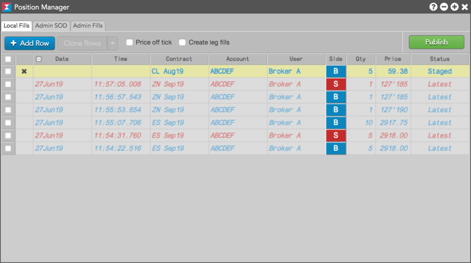
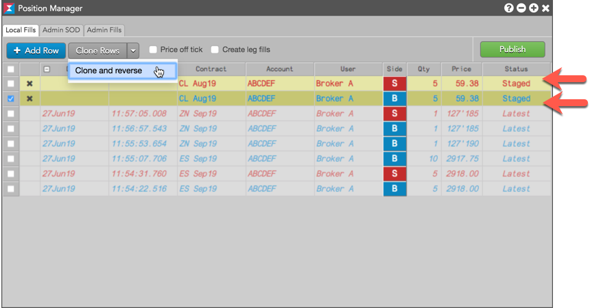
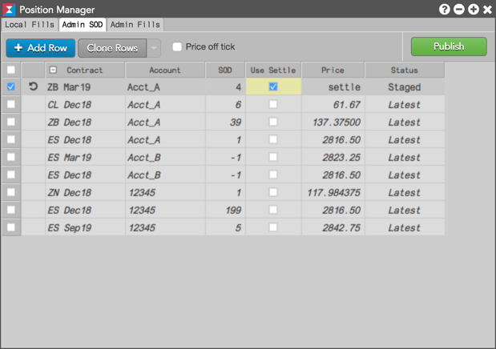

The Position Manager widget allows you to create and publish manual fills and Start of Day (SOD) records for users and accounts in your company. Restrictions for using the widget are based on your permissions per account. If you have permission in Setup to update positions for an account, you'll be able to add manual fills and SOD records for that account.
To open the Position Manager widget, click Widgets in the workspace menu bar and select Miscellaneous | Position Manager. You can also open the Position Manager when you click Create Manual Fill or Modify SOD from the right-click context menu in the Positions widget.
A manual fill record typically represents a position obtained outside of the TT system. Using Position Manager, you can manually add fills to more accurately manage overall positions per account. Once a manual fill is published, it cannot be changed. However, it can be offset with another manual fill.

When you click Admin Fills to create a fill and click Publish, the Position Manager widget generates the manual fill record, and all traders using that account can view the fill. The published manual fill is viewable in the Fills and Positions widgets of all users sharing the account, and is used in risk limit calculations for the account. These fills appear in the Fills widget with a status of "Admin" in the ManualFill column. To add these fills, user permission to update positions on the account is required.
To help manage your local view of positions and risk, you can click Local Fills in Position Manager when creating a manual fill. To create manual fills, user permission to update positions on the account is required.
{% include uploaded-local-fills.html %}You can offset one or more local or admin manual fills using the Clone and reverse drop-down menu option. To submit an offsetting fill, select the fill in Position Manager, click the Clone Rows button, and select Clone and reverse. When selected, the offsetting fill for the opposite side of the trade is displayed in Position Manager.

A Start of Day record (SOD) is the summary of the net position that a trader had in a specific market, account, or contract during the previous trading session. Using Position Manager in Admin SOD mode, you can manually add SODs to more accurately manage positions per account and contract. To add an SOD, user permission to update positions on the account is required.

When you click Publish, Position Manager generates the SOD record. The published SOD is viewable per account in the Positions widget, which uses the SOD to calculate risk limits for the account. A published SOD is viewable by all users sharing the account.